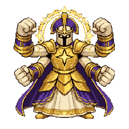
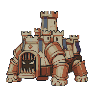

Pawnbound
In development · Pre-production
The Dex
Every monster's original illustration, with the pixel sprite you meet in the game in the corner, its element and its battle role (Fang, Maul, Tide, Aegis, Riposte or Hymn). 15 so far; more appear as the art team finishes them. Final evolutions are hidden: click the eye to see one.

Read more
It rolls wherever it likes and bumps into anything in its way, to find out whether it is strong. Children dare each other to stand in its path, and it always wins the bump.

Read more
It loses most of its arguments with walls, then goes back to argue again a little harder. Travellers say it has chipped more stone from the roads than the rain has.

Read more
It no longer rolls: it walks straight at a gate and rings its head against it until the gate opens. One bump from it rings like a bell, and the sound carries a mile across a town.

Read more
One blow from it can knock a grown man flat, and it hits again before he gets up. Children no longer leave stones in its path, because it never waits for anyone to step aside.

Read more
It can break a stone wall with one stroke, and few things stand in its way afterwards. Villages that hear it coming lock their gates, and old travellers say it has never once stopped to ask the way.

Read more
It plants itself in a doorway and will not be moved, however hard people push. Children play at it being a wall and try to push it over, and always give up first.

Read more
It squares up to anything that comes near and shoves it back with a stone shoulder. Travellers learn to walk round it, because it does not give ground to anyone.

Read more
It stands in the way until the danger turns back, and it never needs to chase anything. Those who tried to push past it say it stood still for a whole morning and never gave way.

Read more
One bite from its jaw splits a wooden gate, so people no longer try to bar a door against it. Carts stop dead against it, and it has never once been pushed off its spot.

Read more
It stands still for days at a time, and no storm in living memory has ever moved it. Old travellers say no army has ever got past it, and that it has never once stepped aside.

Read more
It hops along the road in a crooked L and will not be talked out of it, however loudly people shout. Children on the hill road race it to the next bend, and it always wins and then waits to be cheered.

Read more
It takes a running kick at the same bend again and again, and the bend has been known to give way first. Travellers say it has kicked more loose gravel off the road than the rain has, and it still wants to go faster.

Read more
It charges every corner at full speed and never slows down to think, so no traveller has ever seen it take a bend gently. Those who tried to block its path say it did not stop, and the road was clear again before they could step aside.

Read more
Once it rears up on the road ahead, few things stand in its way, and its landing carries a crash across the hills. It no longer hops in an L: it leaps a gap no traveller would dare to cross, and lands without a stumble.

Read more
Old travellers swear it once crossed a whole night's road in a single stride, and that the dawn came early the next morning. It is the move no one saw coming, and by the time anyone has seen it, the move has already been made.